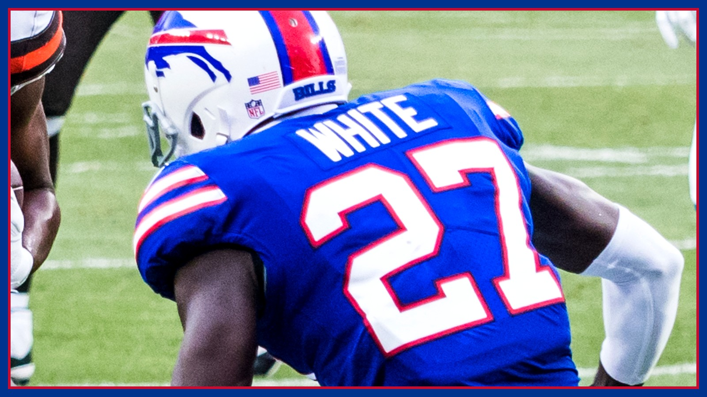

Tre'Davious White could play Sunday. Buffalo brought him back for exactly this week.
If Christian Benford and Dee Alford can't go Sunday against Miami, Tre'Davious White could be back in a Buffalo Bills uniform, per WBUF. DC Jim Leonhard says White is close to ready, per The Buffalo News — a month after the former All-Pro signed to the practice squad on Oct. 19.

The loudest moment at Highmark Stadium on Sunday might belong to a player who is not on the active roster yet. When the Miami Dolphins (1-8) visit the Buffalo Bills (8-1) on Sunday, Nov. 22 at 1 PM ET, Buffalo will be chasing a sixth straight win — and, if its injured defensive backs cannot go, Tre'Davious White could be back in a Buffalo Bills uniform, per reporting this morning from WBUF. White signed to Buffalo's practice squad last month, on Oct. 19, and he has not played a snap since. No elevation has been announced, and this desk is not printing one. But the door that was closed when he signed is open now, and everybody in Orchard Park knows why.
Start with the toll Sunday's 31-12 win at the Jets took on the secondary that built Buffalo's 33-drive touchdown-less streak. Cornerback Christian Benford was ruled out with a groin injury in the fourth quarter, per the Democrat and Chronicle. Nickel cornerback Dee Alford was evaluated for a concussion twice, was cleared to return once, then was ruled out, and must clear the NFL's concussion protocol before he can play against Miami, per the same reporting. Cornerback Maxwell Hairston was shaken up late, and linebacker Dorian Williams left with a calf injury, per the Democrat and Chronicle. That is the context Wednesday's first practice report of Dolphins week lands in — it is the first real clue about who is actually available, and until it posts, every one of those names is a report, not a ruling. If the rulings go the wrong way, Buffalo's next man up is not a rookie. It is No. 27.
The coaching staff has been quietly preparing for exactly this possibility. Defensive coordinator Jim Leonhard said he believes White is close to being ready to help the team, should he be called on, per Jay Skurski of The Buffalo News, via Buffalowdown. That word — ready — has been the whole project since Oct. 19. White joined in the middle of the season, into a new scheme under Leonhard, and it was always going to take time before he was up to speed, per Buffalowdown. He addressed the media on Oct. 28 about his return, his role, mentoring the next crop of defensive backs and what he was doing before Buffalo called, per the Bills' official site. A month of practice-squad work, learning a new defense in the building he used to own a corner of. That is not a nostalgia signing. That is an insurance policy being paid up, week by week, in case November ever looked like this. November looks like this.
To understand why Sunday would hit different, you have to remember who White was here. Buffalo drafted him in the first round, 27th overall, in 2017, and he started as a rookie on the team that ended the 17-year playoff drought — the Bills' first postseason appearance since 1999. By 2019 he was a first-team All-Pro, a Pro Bowler, and the NFL's co-leader in interceptions with six, in a season when he did not allow a single touchdown reception. For a fanbase that had spent two decades watching other teams' stars, White was proof the new era had a face on defense: homegrown, drafted, and shutting down his side of the field every Sunday. Buffalo did not just love Tre'Davious White. Buffalo believed in what he represented.
Which is why the middle of his story still stings. White tore his ACL on Thanksgiving night in 2021, in a game at New Orleans, in his home state of Louisiana, per ESPN's reporting on his recovery. Three injury-riddled seasons followed, then a release, then 2024 stops with the Los Angeles Rams and the Baltimore Ravens, then a return to Buffalo in 2025 — and this fall, a third stint, beginning on the practice squad in October. Most former All-Pros do not take that job. White took it in the city that drafted him, in a new scheme, with no promise attached. The No. 27 jerseys never actually left the Highmark Stadium stands while he was gone. On Sunday, one of them might jog out of the tunnel with a player inside it again.
The roster mechanics around him are moving, too. On Tuesday, Buffalo re-signed defensive back Te'Cory Couch to the practice squad just three days after releasing him, released guard Nick Broeker and placed guard Ar'maj Reed-Adams on injured reserve, per the Democrat and Chronicle — moves that leave the Bills with one open spot on the 53-man roster. Wide receiver Tyrell Shavers faces his own Wednesday deadline today to be activated from the reserve/PUP list, per the same reporting; that is a separate decision from White's, whose path to Sunday would run through a standard practice-squad elevation later in the week, after the practice reports sort out Benford and Alford. This secondary has already been remade once this month — safety Amani Hooker, acquired at the trade deadline, played all 71 defensive snaps in his debut against the Jets, per AP. White stepping in would be the second remake in three weeks, and the first one Buffalo planned back in October.
None of this guarantees a storybook Sunday. An elevation, if it comes, might mean a handful of snaps. It might mean emergency depth that never leaves the sideline. Benford and Alford might heal up and close the door again, and White's debut might wait for Kansas City on Thanksgiving night or beyond. But say it does happen: a 1-8 Dolphins team, a backup quarterback making his second career start, and Tre'Davious White — the drought-breaker, the All-Pro, the practice-squad cornerback who bet on himself in the only city that ever felt like his — running back onto the Highmark Stadium field in a Bills uniform, in a game that counts, for a defense that has not allowed a touchdown in 33 drives. Buffalo brought him back on Oct. 19 for a week exactly like this one. Sunday, we find out if the week has arrived. Go Bills — and get every Dolphins-week practice report and roster move in your inbox every morning with The BNC Blitz.
The BNC Blitz is free: the day's Bills news, one stat that matters, and one take, every morning. Join to keep reading — and never miss the end of a story again.